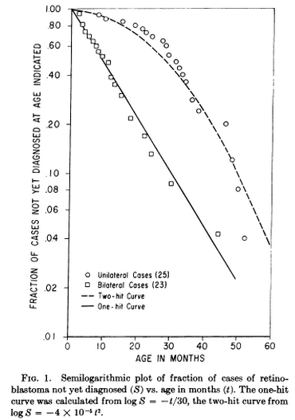
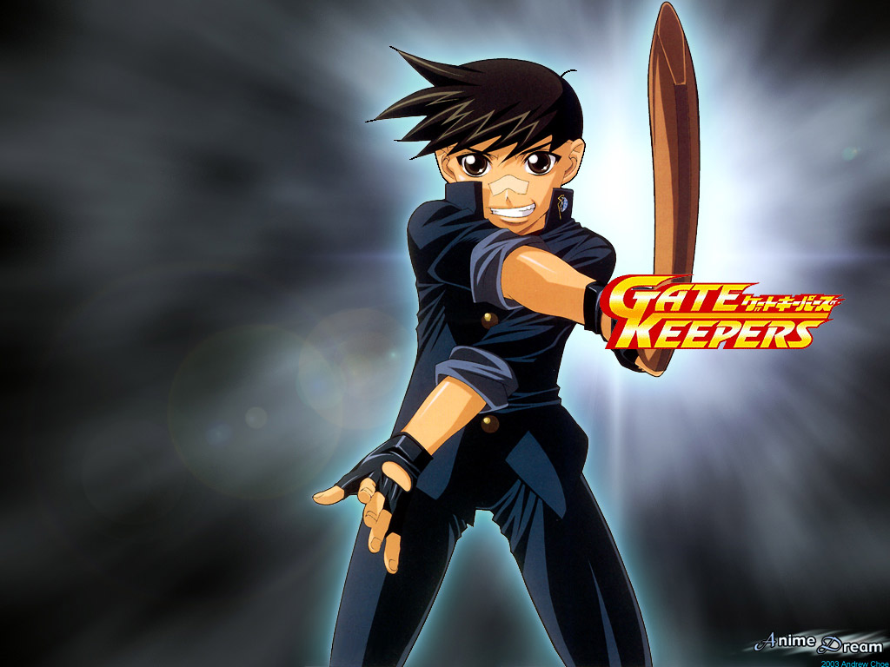
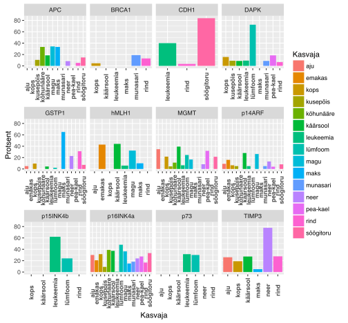

Tuumor-supressorgeenid
Onkobioloogia
Taavi Päll
lektor, Tallinna Tehnikaülikool
Recap
Ras aktivatsioon RTK poolt on vahendatud üle fosfo-türosiini siduvate adaptervalkude
- türosiinkinaas retseptor-P \(\rightarrow\) SH2-Shc-P \(\rightarrow\) SH2-Grb2-SH3 \(\rightarrow\) proline-rich-Sos \(\rightarrow\) Ras
- türosiinkinaas retseptor-P \(\rightarrow\) SH2-Grb2-SH3 \(\rightarrow\) proline-rich-Sos \(\rightarrow\) Ras

Ras aktiveerib kolm põhilist signaalirada
Aktiveeritud Ras seotub ja aktiveerib oma effektorvalke:
- Raf kinaas
- Fosfatidüülinositool 3 kinaas, PI3K
- RalGDS (Ral GEF)


Tuumor-supressorgeenid
Geenide osa vähis on kahesuunaline

Theodor Boveri (1862-1915), Saksa bioloog
- Töötas merisiiliku mudeliga.
- Leidis, et kõik kromosoomid on vajalikud normaalseks embrüogeneesiks.
- Osad kromosoomid stimuleerivad rakkude jagunemist ja osad kromosoomid inhibeerivad.
Tuumor-supressorgeenid
- Lisaks onkogeenidele on vähiga seotud ka teine klass geene tuumor-supressorgeenid (TSG)
- TSG-g toimivad onkogeenidele vastupidiselt, kontrollides ja pidurdades onkogeenide funktsiooni
- Normaalsetes rakkudes on onkogeenide ja tuumor-suppressorgeenide toime tasakaalus ja rakkude jagunemine toimub kontrollitult

Rakkude fuseerimine ja tumorigeenne fenotüüp
Rakkude fuseerimiseksperimendid viitasid TSG-dele
- Rakkude fuseerimist kasutati transformeerunud fenotüübi uurimiseks: vähirakke fuseeriti normaalsete rakkudega.
- Rakkude fuseerumise võib indutseerida kasutades viiruseid või keemiliselt PEG-iga.
- Saadakse hübriidsed rakud e. sünsüütsiumid.
- Üllatuslikult, normaalsete ja vähirakkude fuseerumisel saadud hübriidsed rakud kaotasid tumorigeensuse!

Tumorigeenne fenotüüp on retsessiivne
- Geeni mutantne alleel on metsik-tüüpi alleeli olemasolul retsessiivne,
- Metsik tüüpi alleel hoiab rakus ära tumorigeense fenotüübi avaldumise, siis ka nimetus tuumor-suppressor geen
- Tuumorsupressorgeeni funktsiooni kadu toimub rakus ainult selle geeni mõlema alleeli muteerumise läbi

Raku fuusion eksperimentide paradoks
- Vähisündroomid (retinoblastoom, Li-Fraumeni, neurofibromatoos) on dominantse pärilikusega: pärilikku vähi mutatsiooni kandvad indiviidid saavad peaaegu kindlasti vähi
- Tuumor-supressorgeenid aga toimivad raku tasemel retsessiivselt: ühe alleeli mutatsioon ei ole piisav raku transformeerumiseks
Vähi seos elueaga
- Kui vähki põhjustab järestikuste mutatsioonide akumuleerumine raku DNA-s siis peab vähiteke olema epidemioloogiliselt seotud vanusega
- Ühe mutatsiooni korral oleks kõigis vanustes inimestel vähi intsidents sama peale mingit vanust
- Kahe mutatsiooni korral on vähk lineaarselt vanusega seotud: \(intsidents \sim vanus\)
- Kolme mutatsiooni korral: \(intsidents \sim vanus^{2}\) jne.
- "..several successive mutations in the same cell, probabably about seven in the case of human cancer, would be necessary.."
Knudsoni hüpotees
- Knudsoni hüpotees (multiple-hit hypothesis) oletas, et vähk tekib mitme (vähemalt kahe) mutatsiooni akumuleerumisel raku DNA-s.
- Alfred G. Knudson formuleeris oma hüpoteesi 1971.a. Carl O. Nordlingu järgi.
- Knudsoni töö aitas kaudselt kaasa 'vähigeenide' identifitseerimisele.
- Knudson pälvis oma tööde eest 1998 Albert Laskeri meditsiinipreemia (Albert Lasker Medical Research Award).

Retinoblastoom
- Retinoblastoom on lapseea vähisündroom mis tekib reetina fotoretseptorite ja ganglionite eellasrakkudes.
- Intsidents üks juht 15000 kuni 20000 sünni kohta.
- Arenenud maades keskmine iga diagnoosil 27 kuud unilateraalse vormi korral ja 15 kuud bilateraalse vormi korral.

Päriliku Rb patsientidel on vähirisk suurem.
- 50 aastat peale retinoblastoomi diagnoosi ja ravi avastatakse 36% päriliku Rb patsientidest mõni teine kasvaja, samas sporaadilise Rb patsientidest ainult 5.7%.
Knudson: Statistical Study of Retinoblastoma
- Tõenäosus, et pärilikku mutatsiooni kandev reetinarakk moodustab kasvaja:
- \(\frac{2\times10^{-6} ganglionirakku \times 2 silma}{3 kasvajat/patsient} = 0.75\times10^-6\)
- Arvestades, et enamus retinoblastoome tekib esimese 2 eluaasta jooksul, siis ühe mutatsiooni tõenäosus ca \(2\times10^{-7}\)
Distribution of retinoblastoma cases by type and laterality
| RB Type | Bilateral | Unilateral | Total |
|---|---|---|---|
| Hereditary | 25%–30% | 10%–15% | 35%–45% |
| Nonhereditary | 0 | 55%–65% | 55%–65% |
| Total | 25%–30% | 70%–75% | 100% |
Retinoblastoomide tekke kineetika

- Bilateraalsed retinoblastoomid tekivad ühe mutatsiooni (esimese järgu) kineetika järgi
- Unilateraalsed tekivad kahe mutatsiooni (teise järgu) kineetika järgi
Geeni mõlema alleeli muteerumine on väga ebatõenäoline
- Retinoblastoomi puhul ühe mutatsiooni tõenäosus geenis \(2\times10^{-7}\)
- Mõlema alleeli muteerumise tõenäosus on seega \(10^{-14}\)
- Kuidas siis retinoblastoomid tekkida saavad? Välk ju ei löö ometi kunagi teist korda samasse kohta...

RB teise alleeli mitootiline rekombinatsioon
- Mitootilise rekombinatsiooni tõenäosus on paar suurusjärku kõrgem kui mutatsioonil

TSG mutatsioonid
- Mehhanismid mis viivad tuumorsupressorgeeni ühe alleeli 'välja lülitamiseni' on
- mutatsioonid ja
- promootori metülatsioon
- Ühe geenikoopia kadumisele võib järgneda teise alleeli kadu, mis toimub
- teise mehhanismiga kui de novo mutatsioonid või metülatsioon ja viib heterosügootsuse kadumiseni selles lookuses
- Heterosügootsuse kadumine (LOH) jätab TSG lookusesse kaks mittefunktsionaalset alleeli
- LOH on märksa sagedasem kui mutatsioonid või metülatsioon
LOH - heterosügootsuse kadu (loss of heterozygosity)
LOH on kromosomaalne muutus milles läheb vahetusse või kaduma geeni lookus ja seda ümbritsev piirkond.
LOH-il on erinevaid mehhanisme:
- Mitootiline rekombinatsioon
- Lookuse deletsioon
- Defektne kromosoomide segregatsioon (nondisjunction - õdekromatiidid ei lahkne)
- Geenikonversioon

Mitootiline rekombinatsioon

- Toimub rakutükli G2/M faasis
- Rekombineeruvad mitte-õdekromosoomid
- Tekivad homosügootsed rakud heterosügootses organismis
LOH ja Rb
- Lisaks lapseea retinoblastoomile on Rb funktsioon on sagedasti kadunud ka hiljem erinevat päritolu kasvajates
- 13q LOH on tavaline kromosomaalne muutus põie, kopsu, rinnanäärme, pea- ja kaela ning teiste organite vähkides

Sage ja korduv kromosoomi lookuse LOH-event viitab võimalikule TSG-le
| Genoomi piirk. | Geene piirk. | Märklaud | Sagedasti muteerunud geen = p.value | Funktsioon |
|---|---|---|---|---|
| 9p21.3 | 4 | CDKN2A | CDKN2A = 4.4e-15 | CDK inhibiitor |
| 19p13.3 | 7 | STK11 | STK11 = 2.5e-13 | Ser/tre kinaas |
| 6q26 | 1 | PARK2 | E3 ubiquitin ligaas | |
| 1p36.11 | 2 | ARID1A | ARID1A = 1.5e-14 | kromatiini SWI/SNF kompl. |
| 10q23.31 | 2 | PTEN | PTEN = 2.2e-15 | fosfataas |
| 13q14.2 | 2 | RB1 | RB1 = 1.7e-13 | E2F TF inhibiitor |
| 4q35.2 | 1 | FAT1 | FAT1 = 2.4e-15 | atüüpiline kadheriin |
| 17q11.2 | 5 | NF1 | NF1 = 3.3e-13 | Ras GAP |
| 5q15 | 156 | APC | APC=2.6e-13, RASA1=0.0029 | \(\beta\)-kateniini sidumine |
| 7q36.1 | 1 | MLL3 | MLL3 = 1.1e-05 | histooni metüültransferaas |
| 17q21.31 | 2 | BRCA1 | BRCA1 = 3.5e-08 | G2/M DNA kontroll |
| 12p13.1 | 5 | CDKN1B | CDKN1B = 2.2e-06 | CDK inhibiitor |
| 18q21.2 | 3 | SMAD4 | SMAD4 = 6.6e-15 | transkriptsioonifaktor |
Vähki genoomi mutatsioonide 'hotspotid'
Determining how somatic copy number alterations (SCNAs) promote cancer is an important goal. We characterized SCNA patterns in 4,934 cancers from The Cancer Genome Atlas Pan-Cancer data set
Pan-cancer patterns of somatic copy number alteration. Travis I Zack, Steven E Schumacher, Scott L Carter, Andrew D Cherniack, Gordon Saksena, Barbara Tabak, Michael S Lawrence, Cheng-Zhong Zhang, Jeremiah Wala, Craig H Mermel, Carrie Sougnez, Stacey B Gabriel, Bryan Hernandez, Hui Shen, Peter W Laird, Gad Getz, Matthew Meyerson & Rameen Beroukhim. Nature Genetics 45, 1134–1140 (2013) doi:10.1038/ng.2760
Paljud TSG-d seotud pärilike vähisündroomidega
| Genoomi piirkond | Geen | Pärilik sündroom | Sporaadiline vähk | Funktsioon |
|---|---|---|---|---|
| 3p25 | VHL | von Hippel-Lindau sündroom | neeru kartsinoom | HIF-i ubiquitin ligaas |
| 5q15 | APC | perekondlik adenomatous polyposis coli | käärsool, kõhunääre, magu, eesnääre | \(\beta\)-kateniini deg. |
| 9p21 | p16INK4a | perekondlik melanoom | erinevad | CDK inhibiitor |
| 10q23.31 | PTEN | Cowdeni tõbi, rinna ja GI tuumorid | glioblastoom, eesnääre, rinna ja kilpnäärme vähk | fosfataas |
| 11p13 | WT1 | Wilms tuumor | Wilms tuumor | TF |
| 13q14.2 | RB1 | retinoblastoom, osteosarkoom | põie, kopsu, rinnanäärme, pea- ja kaela vähk | E2F inhibiitor |
| 17p13.1 | P53 | Li-Fraumeni sündroom | peaegu kõigis vähkides | TF |
| 17q11.2 | NF1 | neurofibromatoos 1 | käärsool, astotsütoom | Ras GAP |
| 18q21.2 | SMAD4 | juveniilne polüpoos | käärsool, kõhunääre | TGF-\(\beta\) TF |
TSG: gatekeepers ja caretakers
TSG-g võib funktsiooni alusel jagada '(värava)valvuriteks' ja 'hooldajateks'.
- 'Valvurid' on seotud rakutsükli kontrolliga nt. p16INK4a (CDKN2A), RB, p27Kip1 (CDKN1B), PTEN
- 'Hooldajad' on seotud kromatiini kontrolli ja genoomi terviklikkuse tagamisega nt. ARID1A, MLL3, BRCA1

DNA metülatsioon
DNA metülatsioon on üks geeni vaigistamise mehhanism
- Vähis metüleeritakse normaalselt mitte-metüleeritud CpG rikkad alad tuumorsupressorgeeni promootor alas
- Sellist de novo metülatsiooni viivad läbi DNA metülaasid
- DNA hüpermetülatsiooniga CpG-rikates alades kaasneb nukleosoomide asetsemine transkriptsiooni alguspunktis, mis on seotud vaigistatud geenidega
- Sagedased metüleeritud TSG on Von Hippel–Lindau (VHL) neerukasvajates ja CDKN2A.

DNA hüpermetülatsioon vähis
Geenide hüpermetülatsioon vähis ei ole totaalne üle terve kromosoomi/regiooni, vaid toimub geenispetsiifiliselt.

Metülatsioon on geenispetsiifiline
## Analysis of Variance Table
##
## Response: Protsent
## Df Sum Sq Mean Sq F value Pr(>F)
## Geen 11 7302.2 663.84 2.4204 0.01096 *
## Kasvaja 14 5109.7 364.98 1.3307 0.20550
## Residuals 90 24684.0 274.27
## ---
## Signif. codes: 0 '***' 0.001 '**' 0.01 '*' 0.05 '.' 0.1 ' ' 1
NF1 on dominantselt päranduv geneetiline haigus
- NF1, esmaskirjeldus Fredrich von Recklinghauseni poolt 1882, on perekondlik vähisündroom esinemissagedusega 1 inimesel 3500
- Kuna NF1 patsientidel esinevad pärilikud deletsioonid ja teised loss-of-function mutatsioonid, siis klassifitseerub NF1 tuumorsupressorgeeniks
- Pooltel NF1 patsientidest on perekondlik haigus ja pooled on pärinud de novo mutatsiooni
- Seega on NF1 lookus inimese genoomis mutatsiooniline hotspot-i
- Kooskõlas klassikalise tuumorsupressorgeeni stsenaariumiga, on NF1 patsientidel jälgitav metsik-tüüpi alleeli kadumine LOH-i või second-hit somaatilise mutatsiooni teel
NF1 sümptomid
| Sümptom | Rakud | Arenguline päritolu |
|---|---|---|
| neurofibroom/MPNSTs | Schwann rakud | neuraalhari |
| perineuraalrakud | mesoderm | |
| fibroblastid | mesoderm | |
| PNS neuronid | neuraalhari | |
| 'Cafe-au-lait' laigud | melanotsüüdid | neuraalhari |
| keratinotsüüdid | ektoderm | |
| Lisch noodulid (iiris) | melanotsüüdid | neuraalhari |
| kognitiivsed defektid | CNS neuronid | neuraaltoru |
| toruluude düsplaasia | ? | mesoderm |
| näokolju düsplaasia | ? | neuraalhari |
| feokromotsütoom | neerupealiste säsi | neuraalhari |
| müeloidleukeemia | müeloidrakud | mesoderm |
| glioblastoom | astrotsüüdid | neuraaltoru |
'Cafe-au-lait' laigud

NF1 vastutab neurofibromatoos I tekke eest
- NF1 patsientidel on eelsoodumus erinevate vähivormide tekkele, peamiselt perifeerses- ja kesknärvisüsteemis
- Patsientidel esineb ka kognitiivseid defekte ja teisi vähiga mitte seotud sümptomeid, mis puudutavad sagedasti neuraalharjast pärit kudesid väljaspool PNS-i
- Iseloomulik kliiniline tunnus on perifeerse närvi vähk neurofibroom.
- 5-10% NF1 patsientidel areneb välja invasiivne pleksiformne neurofibroom (MPNST).
- Lisaks on NF1 patsientidel kõrgenenud risk saada astrotsütoome, feokromotsütoome (pheochromocytoma) ja müeloid leukeemiaid
NF1 on RasGAP

Normaalne perifeerne närv ja neurofibroomi areng

- Perifeerne närv koosneb neuronitest, Schwanni rakkudest, perineuraalrakkudest, fibroblastidest ja sisaldab ka nuumrakke
- Neurofibroomides on kõiki närvi rakutüüpe rohkem. Lisaks on Schwanni rakud dissotseerunud neuronitest ja perineurium on lagunenud
- Neurofibroomi areng saab alguse teiseset mutatsioonist või LOH-ist Schwanni rakkudes. Schwanni rakkude transformeerumine põhjustab muutused ka teistes rakutüüpides, tingituna siis sõltvusest Schwanni rakkudest või haplopuudulikkusest
APC, perekondlik adenomatous polyposis coli
- Perekondlikku/pärilikku adenomatous polyposis coli (FAP) vormi iseloomustab rohke polüüpide teke sooles
- APC geen on muteerunud umbes 60% sporaadilistes kartsinoomides ja adenoomides
- APC on multidomäänne valk mis seostub mitmete teiste valkudega, nagu β-kateniin, aksiin (axin), mikrotuubulid ja tsütoskeleti regulaatoreid EB1 (end binding 1) ja IQGAP1, Asef1 (Rac GEF)
- Enamus (~60%) APC vähimutatsioone asuvad geenis piirkonnas mida nimetatakse 'mutation cluster region (MCR)' ning põhjustavad valgus C-terminaalse deletsiooni
- C-terminaalse deletsiooni tagajärjel kaotab APC võime siduda β-kateniini ja MT
- β-kateniini või mikrotuubulite sidumine on essentsiaalne tuumorsupressor aktiivsuse seisukohalt
- Selle APC funktsiooni kadumine põhjustab β-kateniini akumuleerumise tuumas, kus ta toimib TF-ina kompleksis koos TCF (T-cell factor) ja LEF (lymphoid enhancer factor) transkriptsioonifaktoritega
APC funktsioone
| Rakuline protsess | wild-type APC toime | APC geeni deleteerumise või valgu trunkeerumise toime | APC domäänid | APC funktsioonid | Seostuvad valgud |
|---|---|---|---|---|---|
| kanooniline Wnt signaalirada, transkriptsioon | inhibitsioon | aktivatsioon (kadu) | Armadillo kordused; 15- või 20-aa kordused | stimuleerib β-kateniini fosforüleerimise ja degradatsiooni | β-katenin, GSK3β, aksiin |
| adhesioon | stimuleerib | nõrgendab (kadu) | Armadillo kordused; 15- või 20-aa kordused | β-kateniini rakuline jaotumine plasmamembraani, tuuma ja tsütoplasma vahel | β-kateniin |
| migratsioon | stimuleerib | tugevam stimulatsioon (trunkeeritud) | Armadillo kordused | Asef1 ja Asef2 aktivatsioon \(\rightarrow\) Cdc42 aktivatsioon | Asef1 ja Asef2 |
| kromosoomide lahknemine | korrektne lahknemine | segregatsioonidefektid (kadu) | aluseline domään | kinetohoori funktsiooni regulatsioon | mikrotorukesed |
APC domäänide funktsioonid ja soolevähi deletsioonid
- Kanoonilise Wnt signaaliraja liigne aktivatsioon mängib põhilist rolli APC mutatsioonide poolt põhustatud soolevähi tekkes
- Lisaks on APC-l ouline roll rakkude migratsioonis, adhesioonis ja mitoosis


von Hippel-Lindau tuumorsupressorgeen ja neeruvähk
- von Hippel-Lindau tuumorsupressorgeen (VHL), kromosoomis 3p25, on muteerunud või vaigistatud >50% sporaadilistes selgerakulistes neeruvähkides (clear cell renal cell carcinomas, CCRCC)
- Pärilikud VHL mutatsioonid põhjustavad sündroomi mida iseloomustab kõrgenenud risk saada veresoonevähk (hemangioblastoom) või RCC
- VHL inaktivatsioon põhjustab premaliigsete neerutsüstide tekke. Tsüstide arenemise kartsinoomideks põhustab ilmselt lisamutatsioonide akumuleerumine
- VHL geenilt kodeeritav valk pVHL on funktsioonilt E3 ubiquitiin ligaasi substraati ära tundev subühik,
- pVHL saadab piisava hapniku olemasolul keskkonnas (normoksia) proteasoomsele lagundamisele HIF transkriptsioonifaktori (hypoxia-inducible factor)
pVHL määrab HIF valgu lagundamise
- pVHL osaleb stabiilses ubikvitiin ligaasi kompleksis koos valkudega elongin B, elongin C, Cul2, and Rbx1
- pVHL märklaudadeks on HIF-\(\alpha\) perekonna valgud HIF-1\(\alpha\), HIF-2\(\alpha\) ja HIF-3\(\alpha\)
- HIF-\(\alpha\) valgud on muidu väga ebastabiilsed, välja arvatud madala hapniku tingimustes
- Normaalse hapniku tingimustes HIF valgud hüdroksüleeritakse konserveerunud proliinijääkidel. Seda reaktsiooni viivad läbi prolüül hüdroksülaasid (EGLN perek. valgud)
- Proliin-hüdroksüleeritud HIF seostub pVHL-ile ja ubikvitineeritakse

HIF on transkriptsioonifaktor

- Rakkudes kus puudub funktsionaalne pVHL, või madala hapniku tingimustes, toimub HIF akumuleerumine
- HIF käivitub terve rea hüpoksia adaptatsiooniga seotud geenide transkriptsiooni.
- HIF märklaudgeenid on seotud glükoosi metabolismi ja transpordiga (Glut1, glükolüütilised ensüümid), rakuvälise pH regulatsiooniga (carbonic anhydrase IX), angiogeneesiga (VEGF), erütropoeesiga (EPO) ja mitogeenid (TGF-\(\alpha\), PDGF-B)
- Katseliselt on näidatud, et HIF-2\(\alpha\) alla regulatsioon on vajalik ja piisav, et pVHL supresseeriks neeruvähki
Viiteid
- NF1 Tumor Suppressor Gene Function: Narrowing the GAP. Karen Cichowski, Tyler Jacks. Cell Vol 104, Issue 4, 23 Feb 2001, 593–604. DOI: 10.1016/S0092-8674(01)00245-8
- Adenomatous polyposis coli (APC): a multi-functional tumor suppressor gene. Koji Aoki and Makoto M. Taketo. J Cell Sci October 1, 2007, 120, 3327-3335. doi: 10.1242/ jcs.03485
- The Von Hippel-Lindau Tumor Suppressor Gene and Kidney Cancer. William G. Kaelin, Jr. Clin Cancer Res September 15, 2004 10; 6290S. doi:10.1158/1078-0432.CCR-sup-040025